Всемирный день театра (World Theatre Day) установлен в 1961 году IX конгрессом Международного института театра (International Theatre Institute, ITI) и ежегодно 27 марта отмечается Центрами ITI и международными театральными обществами. Традиционно он проходит под единым девизом: «Театр как средство взаимопонимания и укрепления мира между народами».
Деятельность Международного института театра (МИТ), согласно его уставу, направлена на «укрепление мира и дружбы между народами, на расширение творческого сотрудничества всех театральных деятелей мира».
Ежегодно, по решению исполнительного совета МИТ, по случаю Международного дня театра к мировому театральному сообществу обращаются крупнейшие деятели мировой культуры. Первое международное послание в честь Всемирного дня театра было написано в 1962 году французским писателем и художником Жаном Кокто (фр. Jean Cocteau, 1889—1963).
Ежегодно, по решению исполнительного совета МИТ, по случаю Международного дня театра к мировому театральному сообществу обращаются крупнейшие деятели мировой культуры. Первое международное послание в честь Всемирного дня театра было написано в 1962 году французским писателем и художником Жаном Кокто (фр. Jean Cocteau, 1889—1963).
Как известно, слово «театр» произошло от древне-греческого слова theatron (θέατρον), что значит «место, где смотрят». Традиционно в театре играются два наиболее популярных жанра — комедия и трагедия, символами которых стали театральные маски.
Упоминание о первой театральной постановке датируется 2500 годом до нашей эры. Первая театральная игра состоялась в Египте, сюжетом послужили образы египетской мифологии — истории бога Осириса. Это было зарождением долгой и прочной связи между театром и религией. В древней Греции театр стал формироваться как искусство, устанавливались четкие определения трагедии и комедии, а также других театральных форм. Древнегреческие театральные представления также использовали мифологические образы.
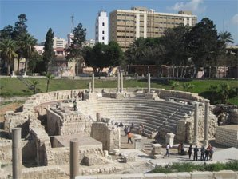Египетский театр, в котором прошла первая постановка
На данным момент, существует большое количество театров, фото наиболее популярных театров
Авторский театр подразумевает под собой принадлежность какому-то одному художественному руковдителю, чьи идеи он и транслирует публике. К ним можно отнести Гоголь-центр, Театр Романа Виктюка, Концептуальный театр Кирилла Ганина и другие.
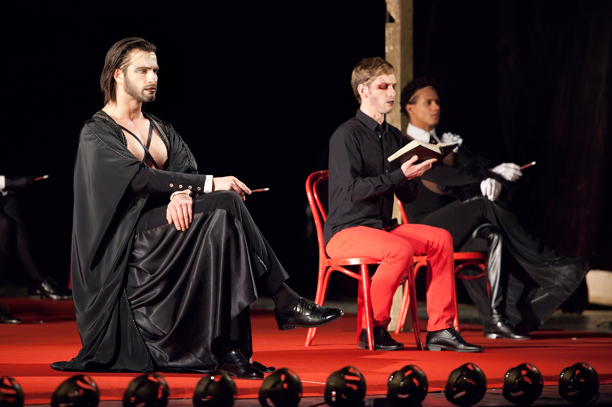В основе драматического спектакля лежит литературное произведение. Драма не только подразумевает выражение мыслей и эмоций посредством слов и мимики, в ней также могут быть задействованы и песни, и танцы.
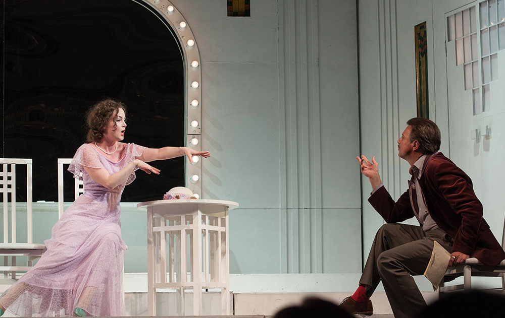Название говорит само за себя. В таких театрах львиная доля репертуара занята именно комедиями, как по классическим литературным произведениям, так и по современным пьесам.
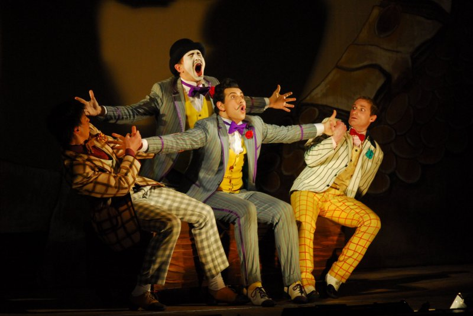Вопреки распространённому мнению, кукольный театр ставит представления не только для детей. Зачастую у них есть спектакли и для взрослых. На сцене нет актёров, но есть куклы и те, кто ими управляют. А ещё есть смешанные представления, где персонажи, которых играют люди, взаимодействуют с куклами.
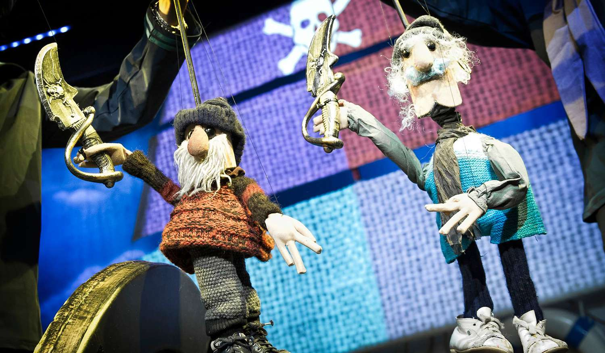В ледовом шоу принимают участие фигуристы. Обычно, сюжет известного произведения откатывается под музыку. В таких мероприятиях используют много спецэффектов. Самые популярные шоу в России ставит компания Ильи Авербуха.
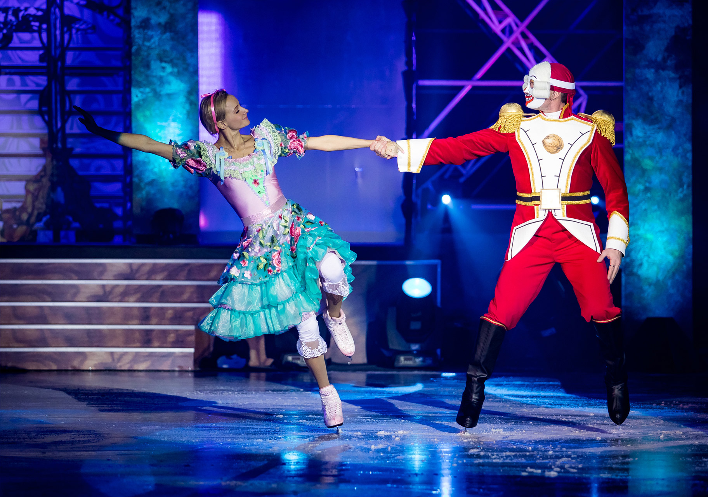Музыкальные театры предлагают зрителям спектакли, основой которых являются пение и танцы. Здесь обычно показывают мюзиклы и оперетты. Такие представления отличаются яркой и запоминающейся подачей, призванной развлекать.
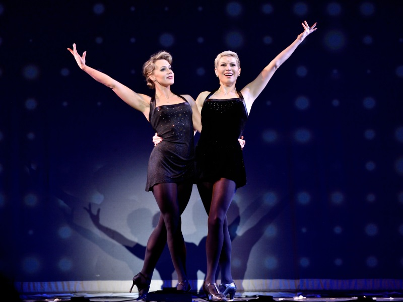Уличный театр на то и уличный, что действие его происходит на открытом воздухе. Главный момент в таких представлениях - импровизация. Такие представления часто подвергаются вмешательству зрителей, потому что между ними и актёрами нет чёткой границы. Из-за этого представления уличного театра часто носят экспериментальный характер.
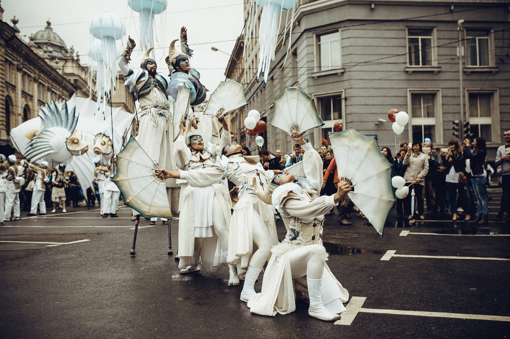Спектакли в театрах Буфф основаны на гротеске, резком преувеличении черт характера, каких-то действий или явлений. Всё это приводит к сатирическому эффекту. Своими корнями буффонада уходит в итальянские площадные комедии дель арте.
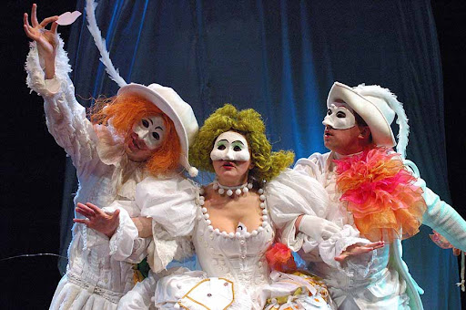Национальные театры подразумевают под собой стили и решения, которые можно увидеть только в одной стране. Широкого мирового распространения такие представления не получили. К таким театрам можно смело отнести японские Ноо и Кабуки, малазийский Мак йонг, тайландский театр масок Кхон и другие.
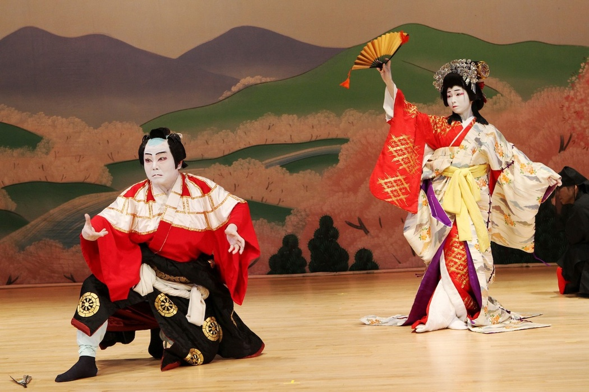В театрах оперы и балета идут только представления этих жанров и концерты классической музыки. Архитектура таких театров специально на них и рассчитана. Самыми известными в России являются Большой театр в Москве и Мариинский театр в Петербурге.

Театр юного зрителя своё название носит не просто так, его аудиторией действительно являются дети, подростки и молодые люди. Репертуар складывается, исходя из возраста аудитории. Хотя некоторые театры позволяют себе порой ставить спектакли для взрослых.
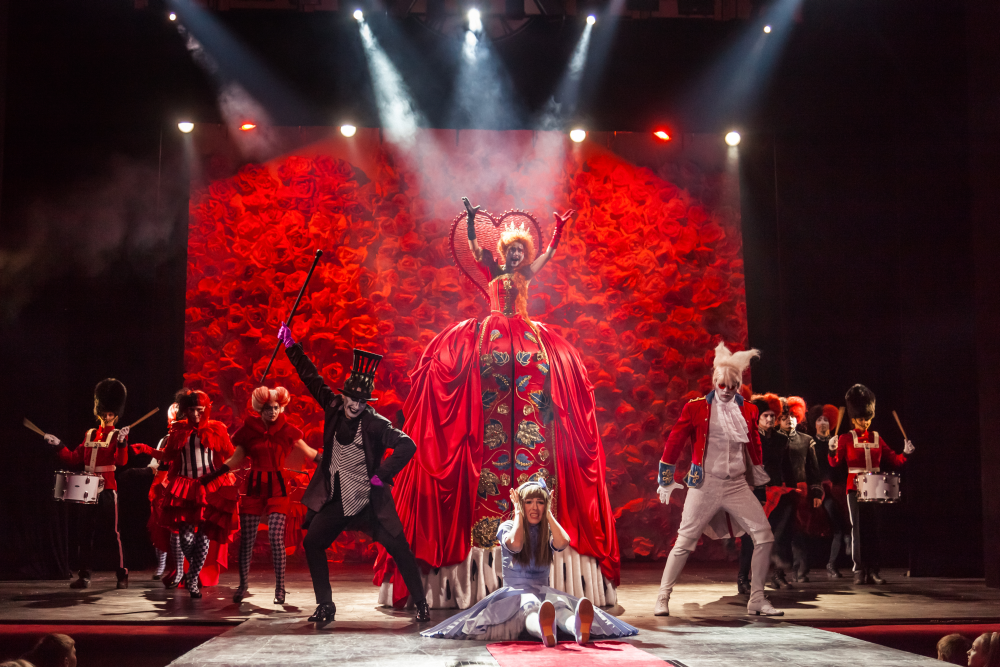Для постановок в театре теней используют большой полупрозрачный экран и марионеток. Зародился этот жанр в Китае, но быстро распросттранился по миру.
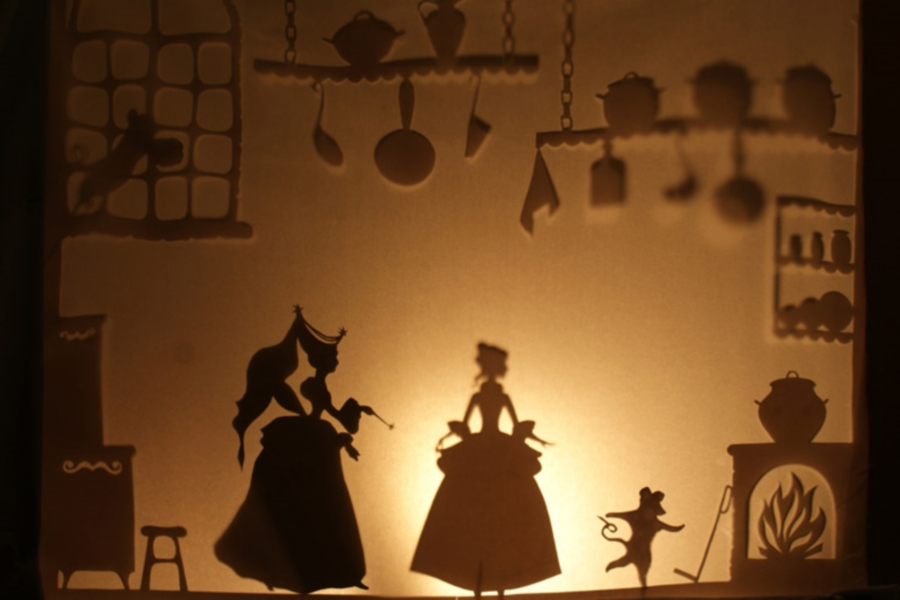Иммерсивный театр - совсем недавно появившийся жанр. Он основывается на полном погружении зрителя в мир постановки. Единственное правило - молчать и не снимать маску. Увидеть такие спектакли можно не везде. Пока они проходят в Нью-Йорке, Москве и Санкт-Петербурге.
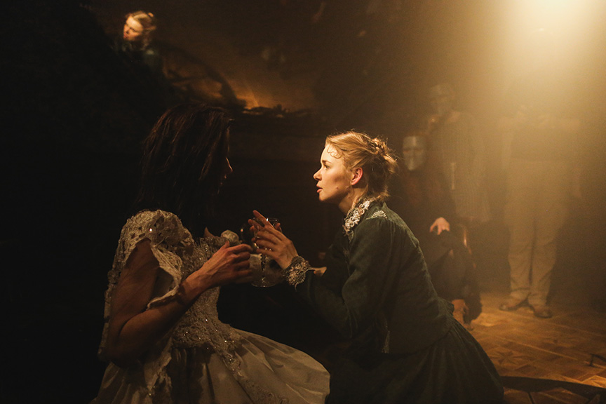Вполне говорящее название - в таких постановках действиетльно участвует только один человек. Иногда спектакль проходит, как монолог одного героя, а иногда актёру приходится перевоплощаться в разных персонажей.
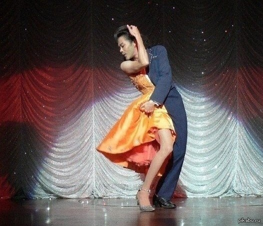Сатирические пьесы, высмеивающие общественные и личные пороки ставят в театрах сатиры. Так как в литературе это довольно-таки часто встречающийся жанр, то недостатка в пьесах у таких театров нет.
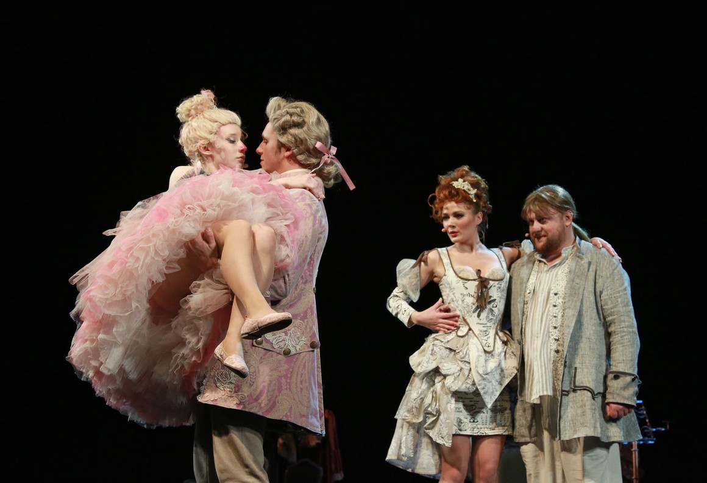В подводном театре сочетаются подводное плавание и...балет. Идея такого вида искусства зародилась в России. Длительност ьспектаклей - всего 40 минут. Актёры задерживают дыхание на 3-4 минуты, а всплывают за воздухом в тех частях бассейна, которые не видны зрителям.